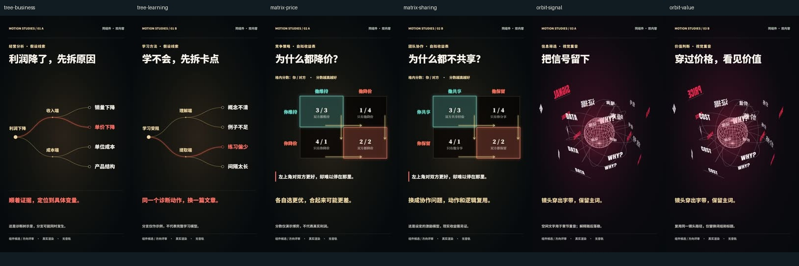

<!doctype html><html lang="zh-CN"><meta charset="utf-8"><meta name="viewport" content="width=device-width,initial-scale=1"><title>Script to Video · 作品与组件</title><style>body{margin:0;background:#f5efde;color:#112b37;font:17px/1.7 system-ui,"Microsoft YaHei",sans-serif}main{max-width:1160px;margin:auto;padding:52px 24px}h1{font-size:clamp(34px,5vw,62px);line-height:1.15;margin:16px 0 26px}small{letter-spacing:3px;color:#536a71}video{width:100%;background:#112b37;border-radius:12px;display:block}a{color:#174acc}nav{display:flex;gap:14px;flex-wrap:wrap;margin:22px 0}nav a{border:1px solid #174acc;border-radius:6px;padding:9px 16px;text-decoration:none}section{border-top:1px solid #112b3728;padding:28px 0}.grid{display:grid;grid-template-columns:1fr 1fr;gap:26px}.grid img{width:100%;border-radius:8px}h2{margin:0 0 12px;font-size:26px}.note{font-size:14px;color:#536a71} @media(max-width:700px){.grid{grid-template-columns:1fr}main{padding:28px 16px}}</style><main><small>SCRIPT TO VIDEO SKILL</small><h1>从文章，到完整章节。</h1><p>可运行工程、分段素材、真实时间线与公开审查边界。</p><section class="grid"><div><a href="examples/chapter-01/"></a><h2>106秒 · 回本以后</h2><p>七段连续解释、配音、SRT与可编辑源码。</p><a href="examples/chapter-01/">打开完整章节 →</a></div><div><a href="examples/batch-01/"></a><h2>第一批 · 动画组件</h2><p>分支、矩阵、空间字带；三组双内容测试。</p><a href="examples/batch-01/">打开组件对照 →</a></div></section><a href="https://github.com/ninglinLiu/script-to-video-skill">GitHub · 源码、素材与Skill</a></main></html>